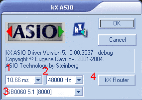
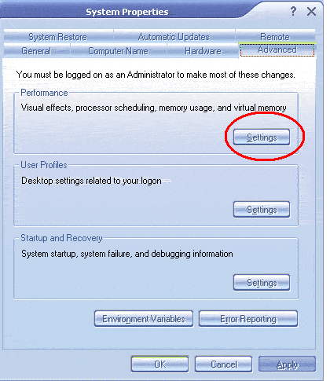
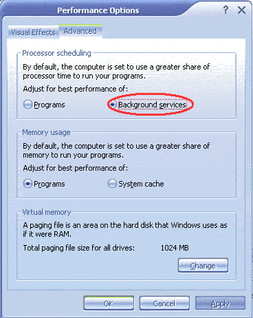

This section of the guide will show various steps to optimise your computer for low-latency ASIO recording.
ASIO (Audio Streaming Input/Output) is a universal audio interface API, and allows latencies down to 2.66 ms (latency of hardware synthesizers is around 5ms) for almost real-time recording. This is important if you are recording vocals, or instrumentals along with pre-recorded or synthesized tracks, such as a drum track.
The ASIO control panel

This window is opened up inside your ASIO host software, usually in the Audio
setup window, with a button called "Control Panel" or "Soundcard
Settings"
1. The menu shows latency the sound card is set at.
2. This menu shows the sample rate the device is set at. IMPORTANT: This MUST
by at 48000hz (48kHz) or you will not be able to record any audio.
3. This menu shows the current device you are using in that application. ASIO
does not support multiple cards.
4. This button opens the kX Router Window.
The hardware in your computer, ie CPU, RAM, Harddrive, all affect the lowest latency that you can use.
The optimal setup would to have the fastest CPU, most RAM and fastest/largest Harddrives available - but if you can afford all this you most likely can afford a pro-audio card.
But if you have an old Pentium III 500, with 256Mb RAM or similiar, you can still obtain low latencies.
To do this you must take steps to optimise your computer.
The first step is, if you have a 2 hard-drive setup, that you dedicate one to Windows, and the other to Audio Recording. Also if possible these hard-drives should be on seperate cables (without CD drives attached to the same cables) If you have to have a CD Drive attached to one of these cables, attach it to the Windows hard-drive.
The second step is to De-fragment you hard-drive, as this will greatly increase the speed at which data is written/read to the hard-drive. Try doing this once a week.
The third step involves opening the control panel and double-clicking
on the "System" control panel.

Go to the "Advanced" page
Click the "Settings" button in the "Performance" section.

Select "Background Services" as the best performance options.
The ASIO API is Background service, and completing that step will allow for lower latencies, but may reduce perforance in some programs. I have been running like this for roughly a year and have not had any performance trouble unless i have too many CPU heavy programs loaded at once.
To test the lowest useable latencty, in your ASIO host, set the latency to the lowest possible (2.66ms). If you hear pops and clicks during normal use of the program, ie playback and recording., it means that latency is unuseable, as the sample buffer cannot be filled quickly enough. Raise the latency to the next level and test again. Keep doing this until you have found a latency setting that works on your computer.
Your computer should now be optimised for recording low-latency audio.